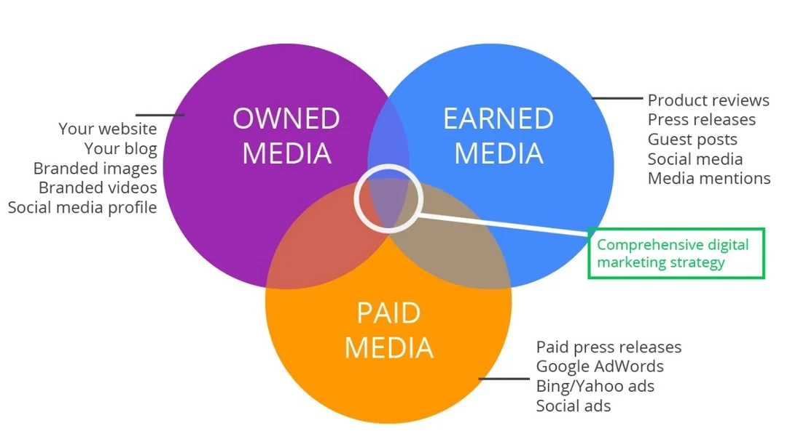

99
Success in getting happy customer
25
Thousands of successful business
120
Total clients who love HighTech
5
Stars reviews given by satisfied clients
Best Social Media Marketing in Hyderabad.
Social media marketing (SMM) is a powerful digital marketing strategy that leverages social media platforms
to connect with your audience, build brand awareness, drive website traffic, and ultimately increase sales
and conversions. It involves creating and sharing valuable content, engaging with followers, running targeted
advertising campaigns, and analyzing performance metrics to optimize results.
One of the key benefits of SMM is its ability to reach a vast audience of potential customers. With billions
of users on platforms like Facebook, Instagram, Twitter, LinkedIn, and YouTube, social media offers unparalleled
opportunities to connect with people around the world and target specific demographics based on age, location,
interests, and behavior.
What Do We Offer?
Customized Social Media Strategy: We develop tailored social media strategies aligned with your
business goals and target audience. Our strategies encompass content planning, posting schedules, ad campaigns,
and engagement tactics designed to maximize your brand's presence and impact on social media platforms.
Content Creation and Optimization: Our team creates compelling and engaging content for your social media
profiles, including posts, graphics, videos, and stories. We focus on delivering valuable and shareable content
that resonates with your audience and showcases your brand's unique voice and identity.
Platform Management and Optimization: We manage and optimize your social media profiles across various
platforms such as Facebook, Instagram, Twitter, LinkedIn, and YouTube. This includes profile setup, bio optimization,
cover photo design, and regular updates to maintain a consistent and professional online presence.
Community Engagement and Interaction: We actively engage with your audience by responding to comments,
messages, and mentions in a timely and personalized manner. Our goal is to build strong relationships with followers,
foster positive interactions, and enhance brand loyalty through meaningful engagement.
Social Media Advertising: We leverage targeted social media advertising campaigns to reach specific
demographics, increase brand visibility, and drive conversions. Our team optimizes ad budgets to maximize ROI and achieve
your advertising objectives, whether it's generating leads, boosting sales, or increasing website traffic.
Influencer Marketing: We identify and collaborate with relevant influencers in Hyderabad or within your
industry to amplify your brand's reach and credibility. By partnering with influencers, we help you tap into new audiences
and leverage authentic endorsements to build trust and brand authority.
Performance Tracking and Reporting:We provide transparent reporting and analytics to track the performance
of your social media campaigns. Our detailed insights cover key metrics such as engagement rates, reach, impressions, clicks,
conversions, and ROI, enabling data-driven decision-making and continuous optimization.
Strategic Consulting and Recommendations:Our experienced SMM professionals offer strategic consulting and
actionable recommendations to optimize your social media presence and achieve long-term growth. We stay updated with industry
trends and best practices to ensure your brand remains competitive in the dynamic world of social media marketing.

Easy and effective
More than 60% of marketers use social media as part of their content marketing strategy.
That's because it's easy and cost-effective! Social media is available on every platform — from mobile
devices to laptops and desktop computers — so it's a great way for small businesses to get their
message out to as many people as possible.
Small businesses don't have the budget or manpower required to create traditional
advertising campaigns,
but they can use social media as a way of building brand awareness and driving traffic back to their website.

For faster and finer communications
Social media marketing is a great way to connect with your customers. Social media marketing helps you build relationships with your audience. It can also help you reach out to new customers, gain insight into what they want, and increase your business's visibility. This makes it easier for you to engage with them on a personal level, which increases the likelihood that they'll buy from you or recommend your product or services to others.
Contact a social media marketing specialist like us to improve your business's reputation and connect with new customers.

Get the best online exposure
Social media marketing has become an essential part of any business's marketing strategy.
If you are not using social media to promote your business, you're missing out on a huge
opportunity to grow your brand and engage with your customers. If you're a business owner
and you're looking for a way to increase your online exposure, look no further than Digital
Shout's social media marketing services. We can help you get the most out of all social media
accounts by using relevant content, engaging with followers and creating a brand that stands
out from the crowd.

Enhanced Customer Trust
Social media marketing is a great way to increase brand recognition,
drive sales and generate leads. With Digital Shout’s social media marketing services
, we can help you get the most out of your investments in time and money
by providing you with expert advice, guidance and support every step of
the way. We will help you understand how to best use each channel for maximum
impact and effectiveness. Our expertise means that we can create custom strategies
based on your specific needs, goals and objectives.
Why Best Social Media Marketing is Essential for Your Business?
The jury is still out on whether or not social media marketing is essential to business.
Some experts believe that social media is a necessary tool for marketing in the modern age,
while others believe that it is not essential and that businesses can succeed without it.
There are a few key factors to consider when making a decision about social media marketing.
First, it is important to understand the role that social media plays in the modern marketing landscape.
Social media platforms like Facebook and Twitter provide businesses with a way to reach a large audience of potential customers.
In addition, social media can be used to build relationships with customers and create a brand identity.
However, social media marketing requires time and effort, and there is no guarantee of success. businesses
should also be aware of the potential risks associated with social media marketing, such as negative publicity
and privacy concerns.
Unlock Your Business Potential with Digital Shout's Social Media Marketing Services
Looking for a reliable social media marketing agency in Hyderabad?
Look no further than Digital Shout! Our team of passionate experts
has a proven track record of delivering results for our clients.
We stay up-to-date on the latest trends and best practices and
offer a wide range of services, including social media management,
influencer marketing, and content creation. With our deep understanding
of social media, we can help you achieve your marketing goals, no matter
the size of your business. The highly experienced team has a deep
understanding of how to use social media to achieve your marketing goals.
Contact us today to learn more about our tailored social media marketing
strategies and take your business to the next level.
Types of Social Media Marketing
Advertising
Interactive content is a game-changer in SMM advertising.
Polls, quizzes, contests, and interactive stories not only
boost engagement but also encourage active participation from
the audience. This two-way communication fosters a sense of connection
and involvement, making the advertising content more memorable and shareable.
Social media marketing thrives on the art of storytelling, and when combined
with advertising, it becomes a powerful tool for brands to connect with their
audience. The key is to create content that not only promotes products or
services but also resonates with the values and aspirations of the target audience.
This means understanding the audience's needs and desires, and then
crafting narratives that speak directly to them.
Content Marketing
Content marketing within social media marketing (SMM) is a powerful
strategy that involves creating and distributing valuable, relevant,
and consistent content to attract and retain a targeted audience.
The goal is to drive profitable customer action by providing
information and solutions that address the audience's needs and interests.
Effective content marketing in SMM begins with understanding the target audience.
By conducting audience research and identifying their pain points, challenges,
and preferences, brands can tailor content that resonates with their audience
on social media platforms.
Influence Marketing
Influence marketing, a key component of social media marketing
(SMM), revolves around leveraging individuals with significant
online followings—known as influencers—to promote products,
services, or brands to their audiences. This strategy capitalizes
on the influencer's credibility and reach to increase brand awareness,
engagement, and ultimately drive conversions.
The first step in influence marketing within SMM is identifying the
right influencers for your brand. This involves researching influencers
whose values, content style, and audience demographics align with your target market.
Micro-influencers with smaller but highly engaged followings can be just as effective
as macro-influencers, depending on your campaign goals and budget.

Paid Media Marketing
Paid media marketing within social media marketing (SMM)
involves leveraging paid advertising tools and strategies on
various social media platforms to reach specific target audiences
and achieve marketing objectives. This approach allows brands
to amplify their reach, drive traffic, and generate leads or
conversions through targeted paid promotions.
To begin with paid media marketing in SMM, brands must first define
their campaign objectives. Whether the goal is to increase brand awareness,
drive website traffic, boost sales, or generate leads, having clear objectives
will guide the selection of the most appropriate paid media tactics and platforms.
Social Media Management
Social media management (SMM) encompasses the
strategic planning, implementation, and monitoring
of a brand's presence on various social media platforms
to engage with its audience, build relationships,
and achieve marketing objectives. Effective social
media management involves a comprehensive approach that integrates
content creation, community engagement, analytics, and optimization.
The first step in social media management is developing a solid strategy.
This includes defining goals, identifying target audiences, selecting relevant
social media platforms, and outlining key messages and content themes.
A well-defined strategy provides a roadmap for consistent and purposeful engagement on social media.